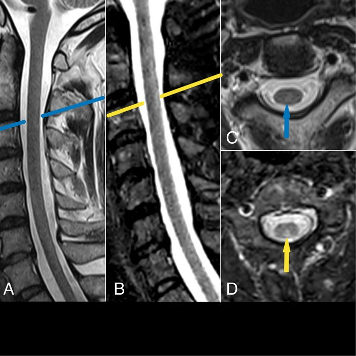
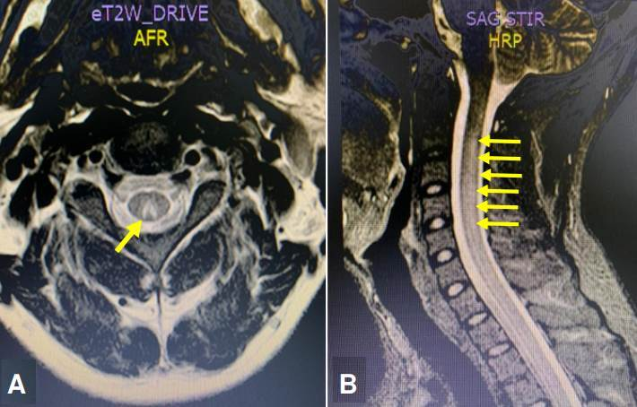
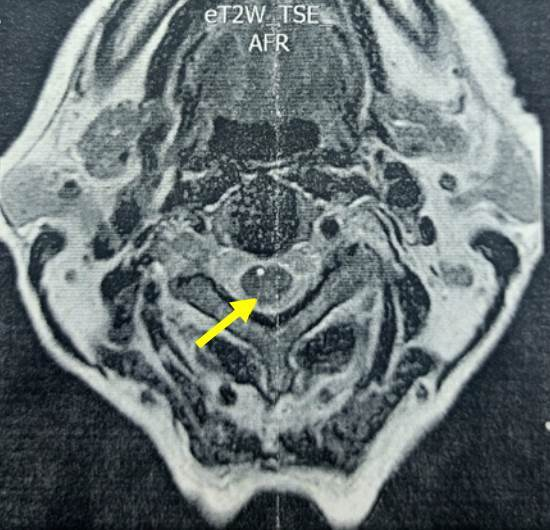

280 — Bệnh tủy do thiếu đồng: kẻ bắt chước hoàn hảo của thiếu B₁₂ và N₂O / Copper deficiency myelopathy
Tags: pattern:tang-t2-doi-xung pattern:chuyen-hoa pattern:myelin vung:tuy-song vung:cot-sau protocol:MRI-T2 protocol:MRI-STIR protocol:xet-nghiem-dong
Mức chắc chắn (certainty): tổng hợp y văn (literature synthesis) — một tổng quan 55 ca từ y văn (PMC3691478), một loạt 3 ca có ảnh MRI (PMC10503487), một ca nguyên văn 2026 có ảnh T2 âm tính/STIR dương tính (PMC13470934), và các ca bổ trợ về xét nghiệm – điều trị (PMC10733163, PMC12144283). Phần cơ chế vật lý T2/STIR là suy luận từ nguyên lý chuỗi xung, đã ghi rõ.
Vì sao bài này quan trọng: đây là nguyên nhân chữa được của một hội chứng tủy mà hình ảnh giống hệt thiếu vitamin B₁₂ và ngộ độc khí cười (N₂O) — nhưng điều trị khác hoàn toàn (bổ sung đồng, không phải B₁₂). Bệnh nhân thường đã được gọi là "thiếu B₁₂", "MDS", hoặc "bệnh tủy không rõ nguyên nhân" trong nhiều tháng; trong ca 2026, chẩn đoán trễ gần 1 năm và bệnh nhân phải ngồi xe lăn. Bỏ sót = tổn thương thần kinh không hồi phục, vì phần thần kinh chỉ hồi phục một phần dù bổ sung đúng.
1. Tổng quan bệnh học – cơ chế hình ảnh – vì sao "chữ V ngược" và vì sao kèm thiếu máu
1.1. Đồng là kim loại của chuỗi hô hấp tế bào, không phải "vi chất phụ"
- Đồng là nhóm ngoại (prosthetic group) của cytochrome c oxidase (phức hợp IV) — enzyme cuối chuỗi vận chuyển điện tử; thiếu đồng → giảm ATP, stress oxy hóa (Cu/Zn-superoxide dismutase), và rối loạn tổng hợp myelin. Vì vậy tổn thương giống thoái hóa tủy kết hợp bán cấp (subacute combined degeneration, SCD) do thiếu B₁₂: cùng là myelin bị tổn thương do thiếu năng lượng, không phải do viêm.
- Đồng còn là cofactor của ceruloplasmin/hephaestin (ferroxidase) — cần để đưa sắt ra khỏi tế bào. Thiếu đồng → sắt bị "nhốt" trong đại thực bào/tế bào ruột → thiếu máu dù sắt dự trữ bình thường, và giảm bạch cầu trung tính do rối loạn sinh tủy. Đây là lý do bộ ba kinh điển: thiếu máu + giảm bạch cầu + bệnh tủy (PMC5637704).
1.2. Vì sao cột sau, vì sao cổ–ngực, vì sao "chữ V ngược"
- Cột sau (dorsal columns) chứa fasciculus gracilis (sợi từ chi dưới, nằm trong) và fasciculus cuneatus (chi trên, nằm ngoài). Đây là các sợi có myelin dày, dài nhất, tiêu thụ năng lượng cao nhất của tủy → dễ tổn thương nhất khi thiếu năng lượng do thiếu đồng (giống B₁₂). Tổn thương → mất cảm giác bản thể (proprioception) và rung âm thoa → thất điều cảm giác (sensory ataxia), Romberg dương, đi lại như người say.
- TẠI SAO tăng tín hiệu trên T2: mất myelin + phù nội myelin (intramyelinic edema) làm tăng nước tự do trong mô → T2 kéo dài → tín hiệu sáng. Trên mặt cắt axial, hai bó cột sau nằm sát nhau ở phía sau tủy, tạo hình chữ V mở ra sau ("inverted V") — dấu hiệu không đặc hiệu cho nguyên nhân, chỉ định vị cột sau.
- TẠI SAO STIR quan trọng hơn T2 thường: STIR (short tau inversion recovery, TI ~150 ms) triệt tiêu mỡ (mô mỡ có T1 ngắn), nên nước bệnh lý nổi bật trên nền tủy/mỡ bị triệt tiêu; độ tương phản với phù nhẹ cao hơn T2-TSE. Ca 2026 cho thấy đúng điều này: T2-TSE sagittal âm tính, chỉ STIR mới thấy dải tăng tín hiệu hình tam giác ở cột sau cổ–ngực trên (PMC13470934). Hệ quả thực hành: MRI T2 âm tính KHÔNG loại trừ bệnh tủy do thiếu đồng.
- TẠI SAO tổn thương thường ở cổ–ngực: đoạn cổ–ngực là nơi các bó cột sau dày nhất và có khoảng cách chạy dài nhất từ thân tế bào; tổn thương thường lan dọc vài đốt, không có khối, không ngấm thuốc, không hạn chế khuếch tán — khác nhồi máu tủy (DWI hạn chế, 2/3 trước, "owl's eyes").
1.3. Ngưỡng định lượng đã có (và chỗ còn trống)
| Thông số | Con số | Ý nghĩa thực hành | Nguồn |
|---|---|---|---|
| Tuổi khởi phát điển hình | thập niên 5–6 | Người trẻ vẫn có, nhất là sau phẫu thuật giảm béo | PMC3691478 (55 ca) |
| Tỷ lệ nữ:nam | 3,6:1 | Nữ chiếm ưu thế rõ | PMC3691478 |
| Giảm tế bào máu (cytopenia) | 78% ca | Thiếu máu thường gặp hơn giảm bạch cầu; có thể bị chẩn đoán nhầm MDS | PMC3691478 |
| MRI tủy bất thường | 47% ca | Hơn một nửa ca MRI thường quy bình thường | PMC3691478 |
| Không tìm được nguyên nhân | 20% ca | "Vô căn" vẫn phải điều trị thử | PMC3691478 |
| Đồng huyết thanh bình thường | 70–133 µg/dL | Dưới ngưỡng này mới gợi ý; đơn vị µg/dL (không phải g/dL) | PMC10733163 |
| Ceruloplasmin bình thường | 21–37 mg/dL | Giảm song song với đồng | PMC10733163 |
| Ca thiếu nặng | đồng 4 µg/dL, ceruloplasmin ≤ 2 mg/dL | Mức này gặp trong nuôi ăn tĩnh mạch kéo dài | PMC12144283 |
| Đồng trong nước tiểu | thấp (khác Wilson: cao) | Phân biệt với bệnh Wilson | PMC3691478 |
| Điều trị (ASMBS/ASPEN) | 2–4 mg đồng IV × 6 ngày, sau đó 3–8 mg/ngày uống | Bắt đầu ngay khi nghi, không chờ đủ xét nghiệm | PMC10503487 |
| Hồi phục huyết học | khoảng 3 tháng | Thiếu máu/giảm bạch cầu đáp ứng tốt | PMC10503487 |
| Hồi phục thần kinh | một phần, đa số còn di chứng | Chẩn đoán sớm là yếu tố tiên lượng chính | PMC3691478, PMC10503487 |
- Chỗ còn trống: không có tỷ lệ mắc chuẩn theo dân số; các con số trên là tỷ lệ trong nhóm ca đã báo, không phải tỷ lệ quần thể. Ngưỡng đồng huyết thanh khác nhau giữa phòng xét nghiệm (70–133 so với 70–140 µg/dL) — luôn đọc theo khoảng tham chiếu của lab.
2. Mẫu hình + chẩn đoán phân biệt theo vị trí và bối cảnh (Gamut)
2.1. Gamut theo mẫu hình "tăng T2 đối xứng cột sau"
- Thiếu đồng (bài này): cổ–ngực, chữ V ngược, không ngấm, kèm cytopenia + yếu tố nguy cơ đường tiêu hóa/kẽm.
- Thiếu B₁₂ (SCD): cùng hình ảnh; B₁₂ máu có thể bình thường, chốt bằng MMA/Hcy tăng.
- Ngộ độc N₂O (bài 265): cùng hình ảnh; B₁₂ bình thường ở ~95%, Hcy/MMA tăng, tiền sử dùng khí cười.
- Bệnh tủy do HIV (vacuolar myelopathy): cột sau ± cột bên, không ngấm, HIV (+), CD4 thấp, thường kèm bệnh não.
- Tabes dorsalis: teo cột sau, T2 thường không sáng hoặc sáng mờ; giang mai huyết thanh (+), mất cảm giác sâu, Argyl Robertson.
- SDAVF (dò động–tĩnh mạch màng cứng): tăng T2 lan dài ≥ 3 đốt, flow void quanh tủy, tăng tín hiệu nón tủy, ngấm thuốc màng tủy; nam lớn tuổi, tiến triển từ từ (bài 226).
- NMOSD/viêm tủy: LETM ≥ 3 đốt, tổn thương trung tâm, dấu H, area postrema; AQP4/MOG (+).
- Tủy mềm do xạ: trong trường chiếu, tiềm tàng > 6 tháng, T2 sáng dọc, không choán chỗ (bài 268).
2.2. Gamut theo yếu tố nguy cơ thiếu đồng (hỏi bệnh là chốt)
- Phẫu thuật đường tiêu hóa trên: cắt dạ dày, bắc cầu dạ dày (gastric bypass), sleeve gastrectomy — đồng hấp thu ở tá tràng/đoạn đầu hỗng tràng.
- Kẽm quá mức: kem dính răng giả chứa kẽm (ca 2026: dùng 5 lần/ngày trong 25 năm), viên kẽm liều cao, kẽm trong nuôi ăn.
- Nuôi ăn tĩnh mạch không đủ đồng, kém hấp thu, bệnh celiac, bệnh viêm ruột, bariatric.
- Thừa sắt (truyền máu nhiều, hemochromatosis) — sắt và đồng cạnh tranh hấp thu.
- Thuốc: một số phác đồ ung thư (chất tạo chelate), kẽm trong điều trị Wilson (làm thiếu đồng thứ phát).
2.3. Ba câu hỏi tại giường
- Có hội chứng cột sau không? (mất bản thể/rung âm thoa, Romberg, thất điều, không yếu vận động nhiều).
- Có cytopenia không? (thiếu máu ± giảm bạch cầu, không giải thích bằng nguyên nhân khác).
- Có yếu tố nguy cơ ăn/uống/kẽm/phẫu thuật không? Nếu có 1 trong 3 → đo đồng + ceruloplasmin + kẽm trước khi kết luận "vô căn".
3. Bảng so sánh phân biệt (ma trận đối chiếu)
| Thực thể (entity) | Hình ảnh điển hình (MRI) | Chốt vào (rule-in) | Chốt loại (rule-out) | Gợi ý xác nhận |
|---|---|---|---|---|
| Thiếu đồng | T2/STIR tăng đối xứng cột sau cổ–ngực, "chữ V ngược" axial; không ngấm, không hạn chế khuếch tán | Yếu tố nguy cơ (dạ dày/kẽm/TPN) + cytopenia + đồng huyết thanh thấp + ceruloplasmin thấp + đồng niệu thấp | Đồng và ceruloplasmin bình thường + đồng niệu cao (nghĩ Wilson) | Đồng huyết thanh, ceruloplasmin, kẽm, CBC; đáp ứng huyết học sau bổ sung |
| Thiếu B₁₂ (SCD) | Cùng vị trí, cùng "chữ V"; có thể kèm cột bên | MMA > 0,4 µmol/L hoặc Hcy > 15 µmol/L; B₁₂ thấp hoặc bình thường | MMA và Hcy bình thường | B₁₂, folate, MMA, Hcy; đáp ứng sau B₁₂ |
| Ngộ độc N₂O | Cùng vị trí; không ngấm, không hạn chế khuếch tán | Tiền sử dùng khí cười + Hcy/MMA tăng, B₁₂ bình thường ~95% | Không phơi nhiễm N₂O | Hỏi kỹ (bóng cười, kem tươi); Hcy/MMA |
| SDAVF | Tăng T2 lan dài tủy ngực–nón, flow void quanh tủy, ngấm màng tủy | Flow void + giãn tĩnh mạch quanh tủy + nam lớn tuổi tiến triển | Không flow void, không giãn tĩnh mạch | MRI toàn tủy + MR angiography → DSA |
| HIV vacuolar myelopathy | Cột sau ± cột bên, teo nhẹ, không ngấm | HIV (+), CD4 thấp, bệnh cảnh mạn | HIV (−) | HIV, CD4; loại trừ nguyên nhân khác |
| Tabes dorsalis | Teo cột sau, T2 thường không sáng rõ | Huyết thanh giang mai (+) + mất cảm giác sâu + Argyl Robertson | Huyết thanh (−) | VDRL/TPHA, CSF VDRL |
| NMOSD/viêm tủy | LETM ≥ 3 đốt, trung tâm, dấu H, area postrema | AQP4/MOG (+) + viêm tủy cấp/tái phát | Không LETM, không kháng thể | AQP4/MOG, CSF |
3.1. Dấu hiệu "chữ V ngược" — đọc thế nào
- Axial T2 tại đốt tổn thương: hai chấm/dải sáng ở phía sau tủy, dính nhau ở đường giữa → hình V mở ra sau. Đây là dấu định vị, không phải dấu nguyên nhân: B₁₂, N₂O, đồng, HIV, tabes đều có thể cho hình này.
- Sagittal STIR là chuỗi nhạy nhất để thấy dải sáng dọc; nếu chỉ có T2-TSE, có thể âm tính (ca PMC13470934).
- Bẫy: tăng tín hiệu STIR do dịch não tủy đập theo mạch (CSF flow artifact) ở tủy cổ — luôn xác nhận bằng axial và bằng hình dạng đối xứng cột sau, không dựa một lát sagittal.
4. Protocol chụp + xét nghiệm + phác đồ điều trị
4.1. Protocol MRI
- MRI toàn bộ tủy sống (cổ + ngực + thắt lưng) sagittal T2-TSE + STIR, axial T2 tại mọi mức có bất thường; T1 để đánh giá teo/tín hiệu nền.
- STIR là bắt buộc khi nghi bệnh tủy chuyển hóa — không thay bằng T2 thường (độ nhạy thấp hơn với phù nhẹ).
- Cản quang: không thường quy; chỉ khi nghi viêm/u/SDAVF. Bệnh tủy do thiếu đồng không ngấm.
- Không cần DWI thường quy; nếu có, không hạn chế khuếch tán (khác nhồi máu tủy).
- Nếu MRI âm tính mà lâm sàng vẫn gợi ý → chụp lại với STIR sau 1–3 tháng hoặc chuyển tuyến có kinh nghiệm tủy.
4.2. Xét nghiệm tối thiểu (làm trước khi bổ sung)
| Nhóm | Xét nghiệm | Diễn giải |
|---|---|---|
| Đồng | Đồng huyết thanh, ceruloplasmin | Cả hai cùng giảm; ceruloplasmin là protein pha cấp nên có thể giả tăng khi viêm |
| Đối chiếu | Đồng nước tiểu 24 giờ | Thấp trong thiếu đồng; cao trong Wilson |
| Kẽm | Kẽm huyết thanh | Kẽm cao gợi ý nguyên nhân; kẽm bình thường không loại trừ phơi nhiễm kẽm |
| B₁₂ | B₁₂, folate, MMA, Hcy | Loại trừ/đồng thời phát hiện thiếu B₁₂ (hay gặp sau bariatric) |
| Máu | CBC, hồng cầu lưới, sắt, ferritin | Thiếu máu ± giảm bạch cầu; không vội kết luận MDS |
| Khác | HIV, giang mai huyết thanh, creatinin, men gan | Loại trừ các nguyên nhân khác trong gamut |
| DNT | Chỉ khi nghi viêm/nhiễm | Bệnh tủy do thiếu đồng: DNT bình thường hoặc protein tăng nhẹ |
4.3. Điều trị (theo ASMBS/ASPEN, qua PMC10503487)
- Cắt nguồn kẽm (kem dính răng, viên kẽm) và sửa yếu tố nguy cơ (chế độ ăn, TPN bổ sung đồng).
- Đồng IV 2–4 mg/ngày × 6 ngày nếu thiếu nặng/triệu chứng thần kinh; sau đó đồng uống 3–8 mg/ngày đến khi đồng huyết thanh về bình thường.
- Ca nhẹ/không có đường truyền: đồng gluconate 2 mg/ngày (ca PMC13470934) — theo dõi sát.
- Theo dõi: CBC + đồng huyết thanh sau 2–4 tuần, rồi mỗi 3 tháng; MRI lặp sau 3–6 tháng nếu có tổn thương ban đầu.
- Tiên lượng: huyết học hồi phục ~3 tháng; thần kinh hồi phục một phần, di chứng thường gặp — chẩn đoán sớm là yếu tố quyết định.
flowchart TD
A[Tăng T2/STIR đối xứng cột sau tủy] --> B{Có yếu tố nguy cơ thiếu đồng?<br/>cắt dạ dày/bypass, kẽm, TPN, kém hấp thu}
B -->|Có| C[Đo đồng + ceruloplasmin + kẽm + CBC]
B -->|Không| D[Đo B12, MMA, Hcy trước]
D -->|MMA/Hcy tăng| E[Thiếu B12 hoặc N2O]
D -->|Bình thường| C
C -->|Đồng thấp + ceruloplasmin thấp| F[Bệnh tủy do thiếu đồng]
C -->|Đồng bình thường| G[Tìm SDAVF, NMOSD, HIV, giang mai, xạ]
F --> H[Cắt kẽm + đồng IV 2-4 mg x 6 ngày<br/>rồi uống 3-8 mg/ngày]
H --> I[Theo dõi CBC + đồng 2-4 tuần<br/>MRI lặp 3-6 tháng]
5. Biến thể bình thường và cạm bẫy
- MRI T2 âm tính không loại trừ: 47% ca trong tổng quan có MRI bình thường; ca 2026 có T2-TSE âm tính nhưng STIR dương tính. Không có STIR = chưa khảo sát đủ.
- "Chữ V ngược" không phải của riêng thiếu đồng: B₁₂, N₂O, HIV, tabes, thậm chí tủy mềm do xạ đều có thể; không được chốt nguyên nhân chỉ bằng hình ảnh.
- Ceruloplasmin là protein pha cấp: trong viêm/nhiễm, ceruloplasmin và đồng có thể giả bình thường → đo lại khi ổn định, và luôn đo kẽm.
- Kẽm huyết thanh bình thường không loại trừ phơi nhiễm kẽm: kẽm trong kem dính răng/supplement có thể đủ gây thiếu đồng mà kẽm máu không cao; hỏi kỹ nguồn kẽm.
- Chẩn đoán nhầm MDS: tủy đồ có nguyên hồng cầu không bào, loạn sản; ghép tủy cho "MDS" khi thực ra thiếu đồng là sai lầm không hồi phục. Luôn đo đồng trước khi kết luận MDS ở người có bệnh tủy.
- Thiếu đồng + thiếu B₁₂ cùng lúc sau phẫu thuật giảm béo: bổ sung một cái không cải thiện cái kia; điều trị cả hai.
- Bổ sung đồng quá liều: đau dạ dày, buồn nôn, tan máu (hiếm); không dùng ở Wilson (đồng đã thừa).
- Bẫy "satisfaction of search": thấy tổn thương cột sau rồi dừng, bỏ sót SDAVF (có flow void) hoặc NMOSD (LETM + dấu H) — hai bệnh có điều trị hoàn toàn khác.
6. Tự lượng giá — Blind Quiz
Ca 1 — Nam 51 tuổi, mất cảm giác bàn chân rồi mất thăng bằng, đi lại khó dần 1 năm. MRI tủy thường quy ban đầu âm tính. Nhìn 2 chuỗi xung dưới đây, mô tả trước khi mở đáp án.

- Gợi ý lâm sàng: nam 51 tuổi, tê–mất bản thể hai chân, Romberg (+), không yếu cơ rõ, có tiền sử đeo hàm giả sau nhổ răng 25 năm.
- Câu hỏi: (1) Chuỗi nào thấy tổn thương? (2) Tổn thương ở cột nào của tủy? (3) 3 chẩn đoán phân biệt và xét nghiệm nào chốt?
Bấm để hiện đáp án (findings + chẩn đoán)
- Findings: (A) sagittal T2-TSE — tủy không có tăng tín hiệu rõ; (B) sagittal STIR — dải tăng tín hiệu dọc cột sau tủy cổ–ngực trên (mũi tên vàng); (C) axial T2 — chỉ gợi ý mờ, bị đánh giá là giả ảnh; (D) axial STIR — tăng tín hiệu đối xứng cột sau rõ.
- Chẩn đoán: bệnh tủy do thiếu đồng (copper deficiency myelopathy) — do kem dính răng chứa kẽm dùng 5 lần/ngày trong 25 năm; đồng huyết thanh và ceruloplasmin giảm, kẽm tăng. Điều trị: ngừng kẽm + đồng gluconate 2 mg/ngày; hồi phục một phần (đi lại được với hỗ trợ).
- Vì sao T2 âm mà STIR dương: STIR triệt tiêu mỡ và nhạy hơn với nước tự do tăng nhẹ trong phù nội myelin; đây là lý do phải có STIR khi nghi bệnh tủy chuyển hóa.
- Nguồn ảnh: BMC Neurology 2026;26:513 — PMC13470934, CC BY 4.0; chú thích gốc của tác giả.
Ca 2 — Nữ 57 tuổi, tê–yếu hai chân, thất điều, thiếu máu và giảm bạch cầu nhẹ. Ảnh axial T2 và sagittal STIR:

- Gợi ý lâm sàng: nữ 57 tuổi, tiền sử xạ trị vùng chậu (enterocolitis actinic), thiếu máu không đáp ứng sắt/B₁₂.
- Câu hỏi: Dấu hiệu trên axial T2 tên là gì? Vì sao phải đo đồng niệu bên cạnh đồng huyết thanh?
Bấm để hiện đáp án (findings + chẩn đoán)
- Findings: (A) axial T2 tủy cổ — tăng tín hiệu đối xứng hai bó cột sau, hình "chữ V ngược" (mũi tên vàng); (B) sagittal STIR — dải tăng tín hiệu dọc cột sau tủy cổ–ngực.
- Chẩn đoán: bệnh tủy do thiếu đồng trong loạt 3 ca (57–68 tuổi) sau kém hấp thu; đồng huyết thanh thấp, đồng niệu thấp (khác Wilson — đồng niệu cao), ceruloplasmin thấp.
- Vì sao đo đồng niệu: phân biệt thiếu đồng (đồng niệu thấp) với bệnh Wilson (đồng niệu cao) — hai bệnh có hướng điều trị ngược nhau.
- Nguồn ảnh: Biomédica 2023;43(2):171–180 — PMC10503487, CC BY 4.0; chú thích gốc (Figura 1).
Ca 3 — Nam 60 tuổi, thiếu máu + giảm bạch cầu, được chuyển đến với chẩn đoán "MDS". Axial T2 tủy cổ:

- Gợi ý lâm sàng: thiếu máu không giải thích, tủy đồ có nguyên hồng cầu không bào, không đáp ứng yếu tố kích thích.
- Câu hỏi: Có nên tiến hành ghép tủy ngay không? Cần làm gì trước?
Bấm để hiện đáp án (findings + chẩn đoán)
- Findings: axial T2 — tăng tín hiệu đối xứng cột sau (mũi tên vàng), phù hợp bệnh tủy chuyển hóa.
- Chẩn đoán: thiếu đồng — không phải MDS. Không ghép tủy; đo đồng, ceruloplasmin, kẽm, bổ sung đồng. Huyết học hồi phục ~3 tháng; thần kinh chỉ hồi phục một phần.
- Bài học: "MDS" + bệnh tủy + không đáp ứng điều trị → luôn đo đồng trước khi đi đến ghép tủy.
- Nguồn ảnh: Biomédica 2023;43(2):171–180 — PMC10503487, CC BY 4.0; chú thích gốc (Figura 3).
Bài liên quan chéo
- 200 – Tổng quan hệ Thần kinh
- 265 – Ngộ độc khí cười (N₂O): bất hoạt B₁₂, "chữ V ngược", B₁₂ bình thường 95%
- 226 – Tủy mềm không chấn thương: nhồi máu tủy, SDAVF, NMOSD, tủy mềm do xạ
- 215 – Mất myelin: MS, NMOSD & ADEM
- 267 – Presyrinx: phù tủy hồi phục trước giãn tủy
Ảnh
- Tên file:
280_thieu-dong_MRI-*.jpg; nguồn + giấy phép từng ảnh trongimages/CREDITS.md. - Không có ảnh hợp phép cho phần điều trị/xét nghiệm → dùng sơ đồ Mermaid thay vì ảnh ngoài nguồn.
Không dùng để chẩn đoán độc lập khi chưa có người hướng dẫn.